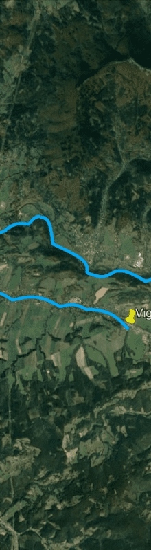

473 002 - Bečva Rožnovská 2
Zvolte si úsek revíru na mapě:

Přítok Bečvy, Moravy. Od jezu pod silničním mostem do Stříteže nad Bečvou až k pramenům včetně všech přítoků.
Tok Bečvy nad nádrží U Macečků až k pramenům a všechny přítoky, kromě potoka Hážovka a Kněhyně po soutok s potokem Kněhyňka, označeno tabulemi, jsou CHRO – lov ryb zakázán.
Úseky toku v Rožnově pod Radhoštěm u mostu na Nádražní ulici, u mostu ke Společenskému domu, od jezu k jezu, a dále úsek toku od ústí Hornopaseckého (Kaního) potoka až po jez u Rožnovského koupaliště jsou celoročně hájeny – lov ryb zakázán – vyznačeno tabulemi.
Při lovu ryb na toku je lovící povinen zaznamenat do kolonky podrevír v záznamu o docházce podrevír 1, při lovu na nádrži U Macečků je lovící povinen vyznačit do kolonky podrevír v záznamu o docházce podrevír 2.
Lov na umělou mušku na nádrži bez omezení.
Na revíru je stanovena horní míra kapra 70 cm.
Tok Bečvy nad nádrží U Macečků až k pramenům a všechny přítoky, kromě potoka Hážovka a Kněhyně po soutok s potokem Kněhyňka, označeno tabulemi, jsou CHRO – lov ryb zakázán.
Úseky toku v Rožnově pod Radhoštěm u mostu na Nádražní ulici, u mostu ke Společenskému domu, od jezu k jezu, a dále úsek toku od ústí Hornopaseckého (Kaního) potoka až po jez u Rožnovského koupaliště jsou celoročně hájeny – lov ryb zakázán – vyznačeno tabulemi.
Při lovu ryb na toku je lovící povinen zaznamenat do kolonky podrevír v záznamu o docházce podrevír 1, při lovu na nádrži U Macečků je lovící povinen vyznačit do kolonky podrevír v záznamu o docházce podrevír 2.
Lov na umělou mušku na nádrži bez omezení.
Na revíru je stanovena horní míra kapra 70 cm.
Číslo revíru: 473 002
GPS Z: 49°27‘50.284“N, 18°3‘14.53“E, K: 49°25‘21.042“N, 18°18‘50.902“E
Rozloha revíru: 30 km, 27.40 ha
Typ revíru: pstruhový revír
Uživatel revíru: Moravskoslezský ÚS
Organizace pověřená hospodařením: MO Rožnov pod Radhoštěm
GPS Z: 49°27‘50.284“N, 18°3‘14.53“E, K: 49°25‘21.042“N, 18°18‘50.902“E
Rozloha revíru: 30 km, 27.40 ha
Typ revíru: pstruhový revír
Uživatel revíru: Moravskoslezský ÚS
Organizace pověřená hospodařením: MO Rožnov pod Radhoštěm